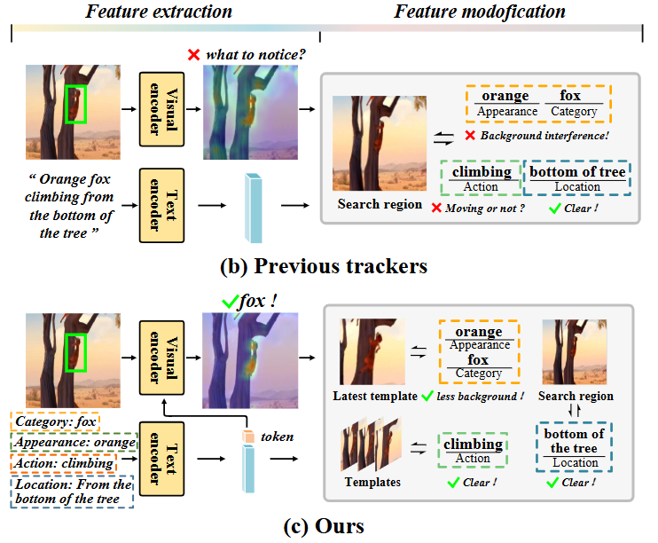
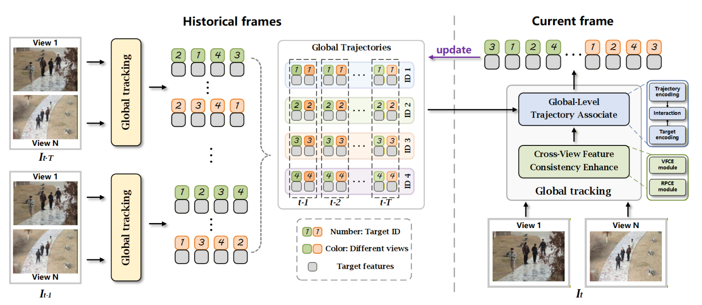
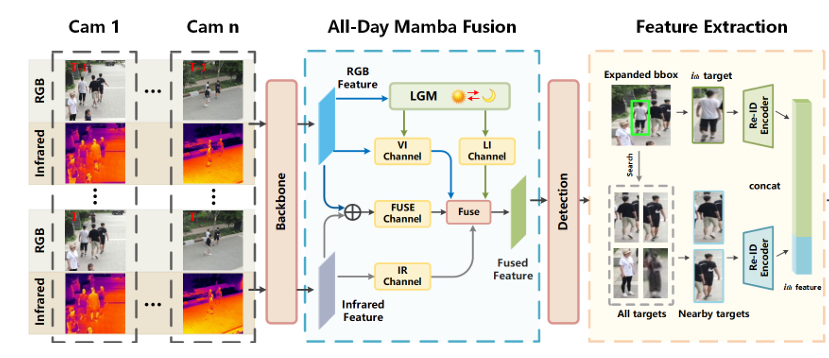

|
Yihao Zhen 甄奕豪 Hi! I am currently a Research Assistant at GVC Lab, Greater Bay University, advised by Dr. Xiaodong Cun. I received my M.S. degree from the University of Chinese Academy of Sciences and my B.S. degree from Shandong University. During my postgraduate studies, I focused on object tracking, particularly vision-language tracking and multi-camera multi-target (MCMT) tracking. I am currently working on human-centric video generation and video world models. |
{kind=link}
Selected Works |
| VL Tracking | |
|
 |
BSTrack: Bridging Cross-Modal Spatio-Temporal Differences in Vision-Language Tracking
Yihao Zhen, Qiang Wang, Liangqiong Qu, Huijie Fan IEEE Transactions on Circuits and Systems for Video Technology official publication A vision-language tracker that bridges cross-modal spatio-temporal differences through fine-grained input decoupling and efficient semantic information updating. |
| MCMT Tracking | |
|
 |
GMT: Effective Global Framework for Multi-Camera Multi-Target Tracking
Yihao Zhen*, Mingyue Xu*, Qiang Wang, Baojie Fan, Jiahua Dong, Tinghui Zhao, Huijie Fan CVPR, 2026 official publication A novel global framework for MCMT tracking that directly exploits multi-view information by modeling global trajectories. |
|
 |
All-Day Multi-Camera Multi-Target Tracking
Huijie Fan, Yu Qiao, Yihao Zhen, Tinghui Zhao, Baojie Fan, Qiang Wang CVPR, 2025 official publication All-day MCMT tracking for robust identity association under different light conditions. |
Education & Research ExperienceUniversity of Chinese Academy of SciencesSep. 2023 – Jun. 2026 Shandong UniversitySep. 2019 – Jun. 2023 GVC Lab, Great Bay UniversityApr. 2026 – Present |
More About Me• A big fan and five-star player in • One of the founders of the MaJia Mountain Cat Alliance. • Once shared my home with a 🐇 and now have two 🐈🐈. |
|
Modified from Jon Barron. |